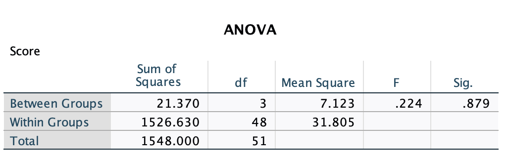

Intro to Today’s Lab
During today’s lab, you’ll be working through the formative assessment. This assessment does not contribute to your course mark. It serves only as a check-in so that you are more aware of what areas you’re confident in, and which areas you may need to revise further. The tutors will be available to clarify any feedback or provide further feedback as necessary. Good luck!
Selecting an Appropriate Test
Checking your Data
Checking Assumptions
Running Statistical Tests
Interpreting Results
Monica - lots of questions with images of SPSS output - which of the following interpretations is correct? that sort of thing.
Imagine that you are investigating the effect of class time (9AM, 10AM, and 1PM) on test scores. You run a One-Way ANOVA and get these results:

Use these to answer the following questions. Assume that you have set alpha = .05.:
Power Analysis
Reporting?